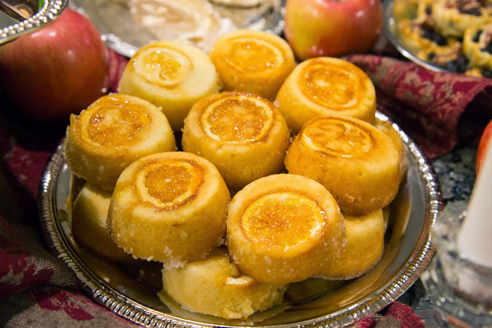

Game of Thrones Lemon Cake

Description
Sansa Stark made these desserts one of the most recognizable in Game of Thrones.
She deserves a sweet treat after all she’s endured, and so do you. For a
Dark Sansa version, pour syrup over the cake, then top with black sesame seeds.
Ingredients
- Nonstick Vegtable Oil Spray
- 2 Cups All Purpose Flower
- 2 Teaspoons Baking Powder
- 3/4 Teaspoon Kosher Salt
- 1/4 Teaspoon Baking Soda
- 1/2 Cup Buttermilk
- 2 Tablespoons Finely Grated Lemon Zest
- 1 Teaspoon Vanilla Extract
- 1/2 Cup Lemon Juice
- 1 Stick Unsalted Butter
- 1 3/4 Cups of Sugar
- 3 Large Eggs
- 1 Lemon Thinly Sliced
Preparation
- Step 1: Preheat oven to 350°. Coat an 8x8" pan with nonstick spray. Line bottom of pan with parchment; spray parchment.
- Step 2: Whisk flour, baking powder, salt, and baking soda in a medium bowl until no lumps remain. Combine buttermilk, lemon zest, vanilla, and ¼ cup lemon juice in a large measuring cup.
- Step 3: Using an electric mixer on medium-high speed, beat butter and 1 cup sugar in a large bowl until light and fluffy, 3–4 minutes. Add eggs one at a time, beating to blend between additions and occasionally scraping down sides and bottom of bowl. Continue to beat mixture, occasionally scraping down bowl, until almost doubled in volume and very light, airy, and pale yellow, 2–3 minutes.
- Step 4: Reduce mixer speed to low, then add dry ingredients in 3 additions, alternating with buttermilk mixture in 2 additions, beginning and ending with dry ingredients. Scrape batter into prepared pan; smooth top.
- Step 5: Bake lemon cake until just starting to turn light golden and a tester inserted into the center comes out clean, 25–30 minutes. Transfer pan to a wire rack; let cool at least 1 hour. Invert cake onto rack, peel off parchment, and let cool completely.
- Step 6: Meanwhile, bring remaining ¾ cup sugar and 3 Tbsp. water to a boil in a small saucepan, stirring occasionally, until sugar is dissolved. Cook lemon slices in a medium pot of boiling water until pith starts to become translucent, about 1 minute. Strain through a fine-mesh sieve, then add blanched lemon slices to boiling syrup. Turn off heat and let cool in syrup 1 hour. Stir in remaining ¼ cup lemon juice.
- Step 7: Transfer cooled cake to a work surface. Cut out 9 rounds with a 2½" round cutter, or use a knife to cut into 9 squares. Drizzle each with lemon syrup and top with lemon slices.
- Step 8: Cake and syrup can be made 1 day ahead. Store cooled, unsliced cake tightly wrapped at room temperature. Cover syrup and chill.